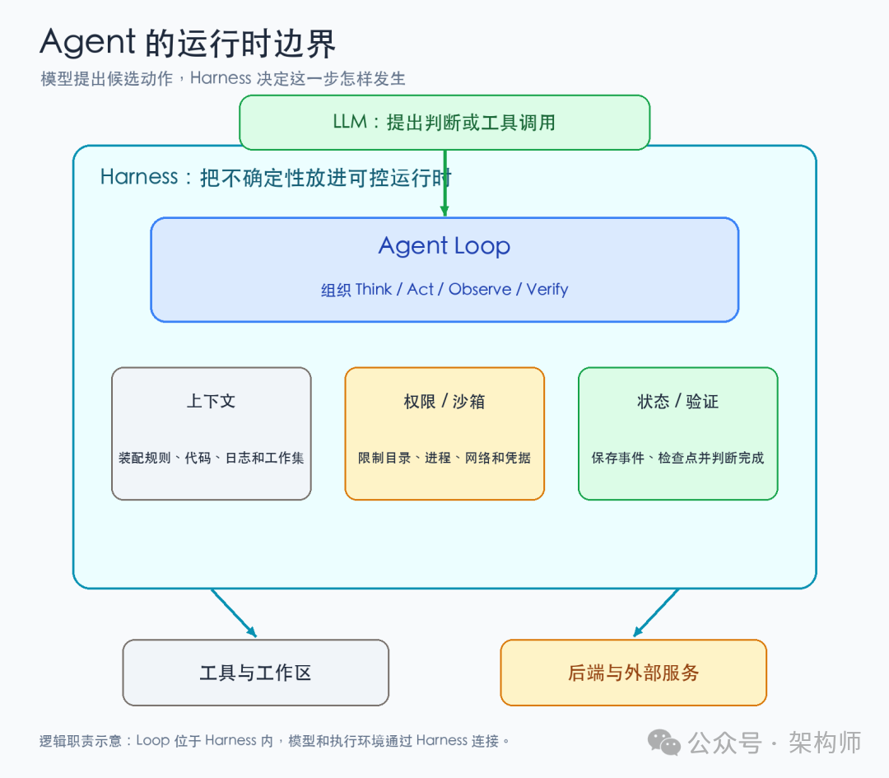
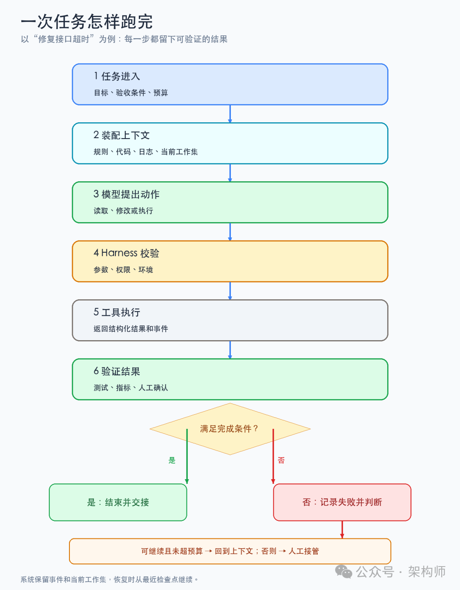
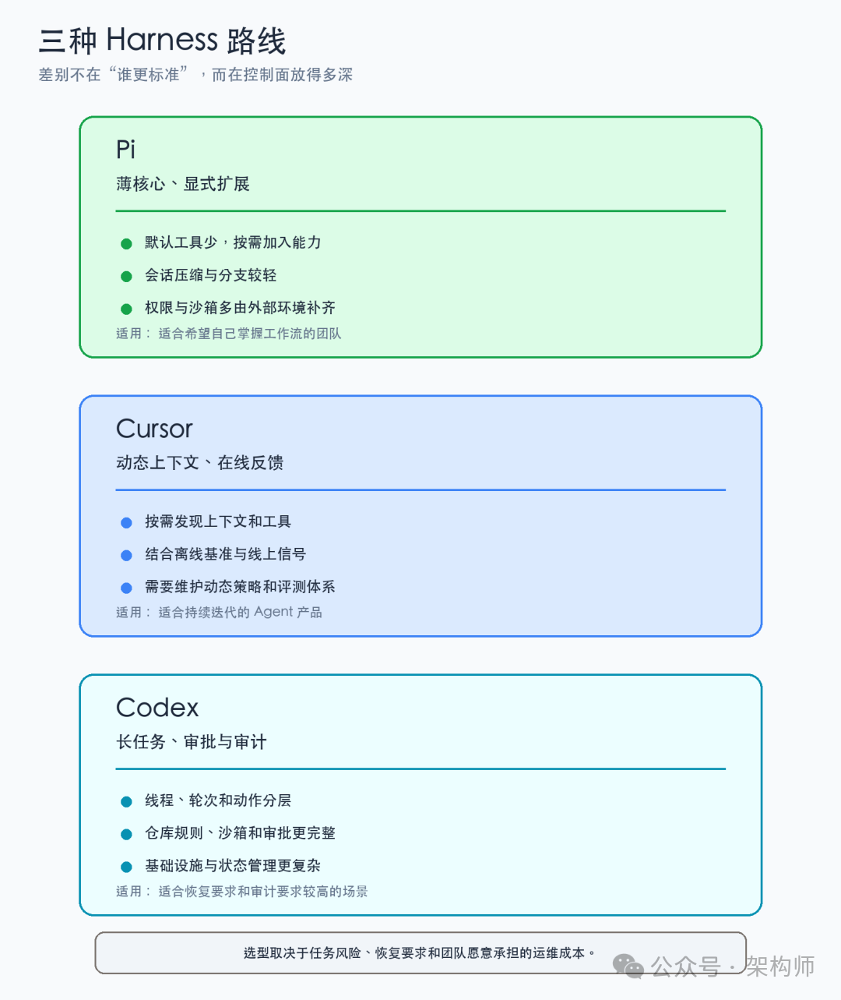

从一次LLM调用到完整Harness：系统理解Agent如何工作
来源：微信公众号 归档日期：2026-09-26 抓取状态：成功 原文字符：10694｜配图：4 张
摘要速览
- 从修接口超时的一条真实工单拆起：定位、改码、补测、开变更的过程中，下一步做什么、何时停、失败从哪续、由谁确认，需要一整套运行时支撑——由此划清 LLM、Agent 与 Harness 的边界，讲清输入来源、动作影响面、失败恢复与完成确认四件事。
核心内容
（待补充）
可执行启发
（待补充）
我的想法
（待补充）
原文沉淀
目录
- 复杂性是一步步补出来的
- 每一层在哪里停下来
- 一次任务沿着什么链路走
- Loop 不只是“再调用一次模型”
- 上下文需要适量，也需要能解释
- 工具调用会把推理变成副作用
- 长任务最先暴露状态问题
- 验证回路决定系统能不能变好
- Harness 也要学会做减法
- 几种 Harness 取舍，差别落在哪里
- Harness 正在接近控制平面
- 参考资料
- 相关阅读：
架构师（JiaGouX）
我们都是架构师！ 架构未来，你来不来？
先从一条看起来很普通的工单说起。假设接到这样的请求：“把这个接口的超时问题修好，补上测试，跑完验证，然后开一个变更。”
真正动手以后，事情会很快变细。Agent 先让模型定位接口入口和下游调用，再读日志或 trace，确认超时究竟发生在哪一段。找到线索后，它还要打开相关代码和配置，改出一份可以审查的 diff，补上能复现问题的测试，最后跑单测和集成检查。
第一次测试可能因为夹具不完整而失败；本地通过的修改，到了集成环境仍可能触发超时。中途用户关掉终端、进程被取消，或者某个参数写错，下一轮都得知道已经发生过什么，才能从合适的位置继续。
即使测试通过，系统还要把改了哪些文件、依据什么证据判断修复有效交给人审核。
麻烦通常从第二步开始：下一步该做什么，什么时候该停，失败后从哪里接着做。
这个任务看着像是让模型多调用几次工具，实际需要补齐一整套运行时：输入从哪里来，动作能影响什么，失败后从哪里继续，最后由谁确认完成。沿着这个任务往回拆，LLM、Agent 和 Harness 的边界也就清楚了。
复杂性是一步步补出来的
最初的系统可以简单到只有一行代码：
answer = LLM(prompt)模型读取输入，生成文字，然后调用结束。它不会自动记住上一轮对话，也不知道自己写出的命令有没有真的执行。
应用想做多轮问答，先得在调用前重新装配上下文：
context = [system_rules, chat_history, user_input]
answer = LLM(context)这一步没有让模型长出一块会话记忆。应用每次把相关历史重新交给它，才形成了连续对话。
上下文装配是 Agent 系统的第一层运行时职责。 哪些规则、文件和历史进入窗口，直接影响模型下一步能看到什么。
问答还不够完成“修复接口超时”。模型得先读日志，再打开代码，修改文件，运行测试，并根据结果决定下一步。于是系统在调用外面加上循环：
while not finished:
response = model(context)
if response.has_tool_call:
result = tool_router.execute(response.tool_call)
context.append(response, result)
else:
return response这就是 ReAct 所描述的基本形态：模型提出动作，环境返回观察，观察进入下一轮决策。模型依旧只生成 token，负责继续运行的是循环本身。
再往前一步，工具调用不能只靠程序从自然语言里猜命令。每个工具要先声明输入输出的 schema（结构约束），每次调用要有 ID，参数要经过校验，结果也要能和原动作对应起来。
Tool Router 负责把模型想做的事情翻译成确定的程序调用，Tool Result 再回到下一轮上下文。文件、终端、浏览器和外部服务，都是在扩展这套动作协议。
任务一长，新的缺口会接连出现：上下文窗口装不下完整历史，于是需要工作集、摘要和持久会话；工具会修改文件、访问网络，权限和沙箱就不能靠提示词维持；任务可能被取消、重试或换一个客户端继续，事件、检查点和恢复也必须留下来。
这些能力逐渐聚集在 Agent Loop 外围，形成了 Harness。
Harness 把模型提出的下一步放进明确的上下文、权限、状态和验证规则里。
每一层在哪里停下来
把这条演化链放回“修复接口超时”这个任务，边界会更清楚。
模型只提出下一步。它可以要求读取文件、调用接口或运行命令，却不会因为生成了工具调用，就真的改变文件或数据库。
Loop 把这个意图变成动作，接收工具结果，再决定是否继续。它关心动作怎样串起来，却不能单独决定调用能影响哪些目录、凭据和网络。
Harness 接过这些运行边界：它准备上下文，限制工具，保存状态，处理取消和恢复，再用测试、指标或人工确认判断任务是否完成。
这样拆开以后，故障会落到具体位置。上下文可能漏掉约束，工具返回的数据可能无法解析，状态可能没有保存，验证也可能只看了语法，没有看结果。

图 1：Agent 的运行时边界
图 1：模型负责提出下一步，Harness 负责把这一步放进可控的运行时。
一次任务沿着什么链路走
回到“修复接口超时”这个任务，运行时大致会经过下面这条链路。

图 2：一次 Agent 任务的处理流程
图 2：验证失败后，系统按检查点继续、重试或转人工，而不是无条件从头开始。
这里有个容易混淆的区别：上下文给模型看，事件留给系统查。
模型下一轮只需要看到和当前决策有关的内容，系统却得保留完整过程，才能回答“刚才执行了什么”“哪一步改了文件”“测试基于哪个版本”。所以，完整历史、当前工作集和运行操作通常要分开保存。
Pi 的 Session 就是这种分离的一个例子。会话被记录成带父子关系的条目，当前上下文从某条分支投影出来。接近上限时，系统压缩工作集，原始记录仍然保留。
压缩改变的是模型下一轮看到的内容，已经发生的事实还在。长任务里，这比把整段聊天记录反复塞回模型更容易控制。
Loop 不只是“再调用一次模型”
把上面的链路压缩到最小，就是一轮 Agent Loop：
Think 根据目标和上下文判断下一步
Act 调用工具或执行动作
Observe 读取动作返回的结果
Verify 判断结果是否满足当前阶段条件
Repeat 继续、停止，或升级给人ReAct 论文描述的是推理与行动交错的基本过程。让 Agent 修一个测试失败，它可以先读日志，推测原因，打开相关文件，修改代码，运行测试，再根据结果决定继续还是停止。
ReAct 解决了“推理和行动怎样交错”；上面的 Verify、停止条件和人工接管，则是生产 Loop 需要补上的工程部分。
到了生产环境，还得追问：这一步改了什么状态？失败能不能重试？循环最多花多少时间和预算？同一种错误连续出现时，是继续让模型猜，还是交给人？
生产环境还要补上验证、停止、状态、恢复、隔离和观测。
没有停止条件，Agent 可能在同一个失败上反复尝试。没有状态，恢复只能重新猜。没有隔离，两个任务会互相覆盖工作区。没有观测，偶尔成功也很难复盘。
停止条件可以分成三类：
- 目标停止
：测试通过、变更已生成、审批已完成等交付条件满足；
- 资源停止
：时间、token、工具调用次数、并发或费用达到上限；
- 风险停止
：权限升级、数据范围变化、连续失败或副作用不可逆，需要人工接手。
聊天可以在不确定时继续说，运行中的 Agent 则要把不确定性显式交给系统，这正是两者的差别。
上下文需要适量，也需要能解释
Andrej Karpathy 在 2025 年一条公开帖子里用“context engineering（上下文工程）”来强调它和狭义“prompt engineering（提示词工程）”的差别。
生产系统要同时组织任务说明、示例、检索内容、工具、状态、历史和压缩。
信息太少，模型会缺少依据。信息太多，又会增加成本并干扰判断。
放到 Harness 里，差别会落在上下文怎么装配。
Cursor 早期会在每次编辑后把 lint 和类型错误主动送回上下文，也会限制模型单轮读取范围和工具调用数量。随着模型能自行发现信息，Cursor 又逐步减少静态提示，增加动态上下文，让模型在需要时读取历史会话、终端状态或相关工具。
运行时先判断下一步需要什么，再按需装配上下文。装配过程也随之变复杂：取了哪些资料，哪些资料没有帮助，上下文变化是否改善了结果，都要留下记录。
OpenAI 分享 Codex 工程实践时，把仓库知识库当作系统记录，把短的 AGENTS.md 当成目录，再通过文档、执行计划、结构约束和检查工具逐步展开信息。
这样做的好处是入口短，详细知识按任务加载，规则和代码一起版本化，过期内容也有机会被检查出来。
在“修复接口超时”这个任务里，下面四类内容不适合混在一起：
- 任务上下文
：目标、验收条件、时间和预算；
- 仓库上下文
：模块边界、编码规则、相关测试和变更流程；
- 运行上下文
：当前分支、进程状态、工具结果和已经完成的动作；
- 决策上下文
：模型选择某个文件、某个参数或下一步验证时，系统可见的依据和说明。
前两类是相对稳定的知识，后两类会随运行变化。全部塞进一条长提示词，既难维护，也说不清一次错误究竟来自规则缺失、状态过期还是模型判断。
上下文工程最后要回答三个问题：模型看到了什么，为什么此时看到这些，下一步是否因此更可靠。三件事都没有记录，调提示词很快就会变成凭感觉试错。
工具调用会把推理变成副作用
模型输出一段文本时，错误通常停留在答案里。模型调用 write_file、bash 或支付接口之后，错误会进入真实系统。
工具不能只看成“模型可以调用的函数”，还要有执行边界。下面四件事要分开：
- 模型请求了什么，参数是否符合 schema；
- Harness 是否允许这次调用，是否需要人工确认；
- 工具在哪个进程、目录、网络和凭据范围内执行；
- 执行结果是否成功，是否可以安全重试。
Pi 的默认核心只提供 read、write、edit 和 bash 四个工具，其他能力通过扩展、Skills 和包按需加入。这样可以减少每次请求里的工具描述和上下文成本。
安全边界也很明确：扩展和内置工具运行在 Pi 进程已有的权限范围内。Hook 可以做确认和审计，却不能替代进程沙箱。不可信代码、敏感凭据和网络限制，仍要交给能限制文件、进程、网络和凭据的运行环境。
工具前的确认回答“是否允许”，沙箱回答“即使允许，最多能影响什么”。把两者都写进模型提示词，出了问题很难追查，也无法证明某次动作确实受到了限制。
工具结果也要验证。结构化调用能让 Harness 检查字段和类型，但 schema 正确不等于业务动作正确。要复盘一次调用，至少得知道状态、版本、来源、错误类型和能否重试。
写文件后检查 diff，改接口后跑测试，调用外部服务后确认返回状态和幂等键。模型可以提出“先执行测试”，验证器再判断测试结果是否满足交付条件。
工具调用协议只能约束参数形状，不能代替安全边界。JSON Schema 不能限制命令影响的目录，“需要确认”也不能代替进程级网络隔离。接口返回“请求已接收”，也不一定表示副作用已经提交，仍要按接口契约核对最终状态。
安全、幂等和回滚要由运行时和后端共同承担。
长任务最先暴露状态问题
短对话可以把状态放在内存里，长任务很快就会暴露问题。
任务运行几十分钟后，至少会出现三种时间：用户看到的对话时间、工具实际执行的时间，以及模型下一轮决策的时间。并行、重试、取消和恢复都会让它们错开。
如果系统只保存最后一条消息，恢复时就不知道某个命令是否已经执行，重复执行会不会造成副作用，也不知道当前摘要是不是基于旧版本代码生成的。
Session、Operation 和工作集也要分工。Session 保存发生过什么，Operation 保存一次运行怎样开始、重试和结束，工作集只提供模型下一步需要的内容。
Pi 的会话树、压缩记录和分支摘要在处理这个问题。Codex 的 Thread、Turn、Item 分层，也把任务、轮次和具体动作分开了。
恢复需要明确的检查点。重新调用一次模型不能代替检查点。
哪些工具结果已提交，哪些动作可以重放，哪些动作必须人工确认，失败该回到模型决策前还是工具执行前，都要提前记录。没有检查点，恢复只是重新猜一次。
长任务还需要阶段契约。“修复超时”可以拆成调查、修改、验证、交接四个阶段。每个阶段都写清输入、允许的动作、完成条件和交接产物，范围就会小很多。
Planner（规划器）拆目标，Generator（执行器）完成局部修改，Evaluator（评估器）判断阶段是否满足条件。阶段之间交接一份可追踪的结果，不要只依赖聊天历史。
Sprint contract（阶段契约）不会把 Agent 变成固定脚本，它只是把每一轮的不确定范围收窄。
调查阶段如果还没有可复现证据，可以继续收集信息；修改阶段先产出可审查的 diff，再进入验证；验证阶段把测试版本和环境记下来，交接时才有依据。
子 Agent 也涉及状态设计，不只是并行技巧。Cursor 的实践里，子 Agent 使用新的上下文窗口，避免主会话被切换模型或额外任务带偏。
上下文隔离后，主 Agent 仍得知道子任务的输入、输出、权限和生命周期；否则只是多出几份看不见的状态。
验证回路决定系统能不能变好
模型生成得快，系统交付未必快。生产质量取决于生成之后的验证回路够不够短、够不够明确。
Cursor 的 Harness 文章把离线基准和线上信号放在一起看。公开基准用来比较框架变化，真实使用中的继续操作、错误率和用户是否保留修改，则提供另一组信号。
工具调用可靠性也要单独监测。一次工具失败，就可能让后面的推理建立在错误状态上。
OpenAI 的 Harness 工程实践还把日志、指标、追踪、可启动的工作树和浏览器操作暴露给 Agent，让它能够复现问题、验证修复，再把结果写入变更流程。
价值在于，原来只对人可见的反馈，现在也能被 Agent 读取和执行。
验证可以分成三层：
1. 动作验证：参数、权限、进程和资源范围是否合规；
2. 结果验证：测试、指标、状态和输出是否达到任务条件；
3. 过程验证：上下文、工具、重试和交接是否留下可追踪记录。
只做第一层，系统可能安全却交付错误结果；只做第二层，偶尔成功却难以复盘；三层都缺，模型能力越强，系统越难维护。
验证不必等到最后。调查阶段用复现脚本确认问题，修改阶段用静态检查和 diff 限制范围，验证阶段再跑完整测试和集成检查。反馈越早回到 Loop，模型越不容易在错误状态上继续推理。
Harness 也要学会做减法
Harness 早期往往在补模型短板：预加载更多说明，替模型过滤工具结果，遇到上下文上限就强制 reset，遇到不稳定动作就加一层编排。它们在当时可能是必要的护栏。
Anthropic 后续讨论 Harness 时提醒过一件事：模型能力变化后，要重新检查哪些控制逻辑还在发挥作用。
原来用来防止模型过早结束的“重置”（reset），可能在新模型上变成额外中断；原来用来减少上下文噪声的过滤器，也可能挡住模型自己发现信息的路径。
模型可以承担更多局部决策，但安全、成本、审批、缓存、审计、回滚和用户体验仍要由 Harness 明确负责。需要定期盘点的是：哪些局部编排、上下文预加载和记忆选择，已经替模型做了它自己能完成的决定。
模型升级时，可以拿一组真实任务比较旧 Harness、新 Harness 和裸模型的轨迹，观察成功率、工具错误、上下文消耗、恢复次数和用户接管点。仍有收益的逻辑留下来，收益消失且增加复杂度的逻辑删掉，或降级成可选扩展。
Harness 的演进要同时处理两件事：把权限、状态、验证和观测做可靠，也拆掉已经不再承重的中间层。
功能一直叠加，系统会变重。边界删得太快，风险又会回到模型身上。取舍要看证据。
几种 Harness 取舍，差别落在哪里
把 Pi、Cursor 和 Codex 放在一起看，没有一套统一的“标准 Harness”。差别在于控制面放得多深。
下面的比较只是根据公开实践归纳职责和取舍，不是完整的产品评测。
Pi 把核心做得很薄：少量默认工具、显式加载的资源、可扩展的 TypeScript 接口，以及会话压缩和分支。适合希望自己掌握工作流的人，代价是权限、沙箱、子 Agent 等能力要由扩展或外部环境补上。
Cursor 把更多精力放在上下文发现、模型适配、在线评测和产品反馈上。它适合持续迭代的 Agent 产品，代价是运行时需要维护更复杂的动态策略和实验体系。
Codex 的路线更重：线程、轮次、动作、审批、沙箱、仓库知识和结构检查被放进一套可持续运行的工程流程里。它适合长任务和高审计要求的场景，代价是基础设施、规则维护和状态管理都更复杂。

图 3：三种 Harness 路线的取舍
图 3：三种路线各有适用范围，差别落在控制面和运维成本。
任务风险、恢复要求、模型和客户端数量，以及团队愿意承担的运维成本，会决定哪些职责放进 Harness 核心，哪些留在项目文件、扩展或后端平台。
Harness 正在接近控制平面
过去常把后端和 Agent Harness 分开：后端提供 API、队列、数据库和日志，Harness 负责模型循环和工具。长任务一多，两边的状态、权限和追踪记录就容易分散。
Agent 会在运行时组合能力。后端还要提供能力发现、状态读取、持久执行、权限边界和统一追踪。
放在这些职责上看，在长任务系统里可以把 Harness 理解成模型与后端之间的控制平面：
它负责安排模型下一步能做什么、实际做了什么，以及出了问题怎样恢复；后端则是它能够观察和改变的执行平面。
这个控制平面要回答四个问题：当前任务处于什么状态，下一步可以调用什么，动作失败如何恢复，完成条件由谁确认。
它不一定是独立服务，也可以由运行时、仓库规则和后端协议共同组成，但职责要有明确归属。
这也能解释 Jev 这类语义决策层的位置。有限答案空间的判断可以从通用生成调用里拆出来，交给更适合审计和回退的决策模块。
Harness 再把判断接到权限、工具和状态上。模型、决策器、后端各自处理擅长的部分，失败才更容易定位到具体边界。
实际检查时，我会先看四个问题：
- 任务失败后，能否指出最后一个确定完成的动作；
- 模型下一轮看到的上下文，能否解释来源和裁剪原因；
- 每个工具的副作用，是否有权限、沙箱和幂等策略；
- 验证结果和运行事件，是否能被人和 Agent 同时读取。
如果这些问题还答不上来，继续增加工具和更强模型，往往只会扩大排查范围。
我的取舍通常是先补齐控制面，再看模型能力有没有转化成稳定的系统行为。
Agent 进入生产后，最费成本的往往是失败处理：一次失败能不能被看见、被解释、被恢复。
Harness 处理的，正是“模型说了什么”和“系统实际发生了什么”之间的距离。
参考资料
- Cursor：《持续改进我们的智能体框架》（https://cursor.com/cn/blog/continually-improving-agent-harness）
- OpenAI：《Harness engineering: leveraging Codex in an agent-first world》（https://openai.com/index/harness-engineering/）
- Anthropic：《Harnessing Claude's Intelligence》（https://claude.com/blog/harnessing-claudes-intelligence）
- Anthropic：《Harness design for long-running application development》（https://www.anthropic.com/engineering/harness-design-long-running-apps）
- ReAct 论文：《ReAct: Synergizing Reasoning and Acting in Language Models》（https://arxiv.org/abs/2210.03629）
- Pi 官方仓库（https://github.com/earendil-works/pi）
- Mario Zechner：《What I learned building an opinionated and minimal coding agent》（https://mariozechner.at/posts/2025-11-30-pi-coding-agent/）
- Andrej Karpathy，Context engineering（https://x.com/karpathy/status/1937902205765607626）
- Simon Willison：《Context engineering》（https://simonwillison.net/2025/jun/27/context-engineering/）
- 《Loop详解：从ReAct到Loop Engineering，Agent到底在循环什么》（2026-06-20）
- 《Agent架构关键变化：Harness正在成为新后端》（2026-05-02）
- 《从 Pi 看 Agent Harness：少做功能，怎样换来更可控的运行时》（2026-09-08）
如喜欢本文，请点击右上角，把文章分享到朋友圈
如有想了解学习的技术点，请留言给若飞安排分享
因公众号更改推送规则，请点“在看”并加“星标”第一时间获取精彩技术分享
·END·
相关阅读：
- Loop Engineering，应该赞成还是反对？
- Claude 做方案，Codex 写代码：多模型协作怎么交接才稳
- 架构排熵：Loop Engineering 的持续清理系统
- CLAUDE.md 拆解：Agent 进仓库前的上下文入口
- Harness工程还没唱罢，Environment工程已然登场
- 设计 Self-Harness 架构：会自我改进的Harness
版权申明：内容来源网络，仅供学习研究，版权归原创者所有。如有侵权烦请告知，我们会立即删除并表示歉意。谢谢!
架构师
我们都是架构师！

关注架构师(JiaGouX)，添加“星标”
获取每天技术干货，一起成为牛逼架构师
技术群请加若飞：1321113940 进架构师群
投稿、合作、版权等邮箱：admin@137x.com
归属：[[02-输入/按主题/AI与效率/_index|AI与效率]]